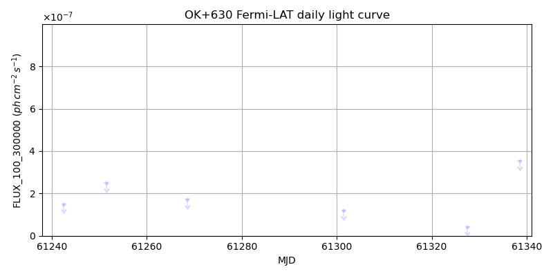
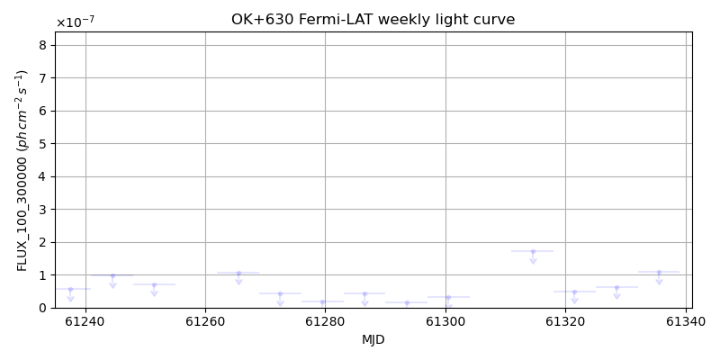
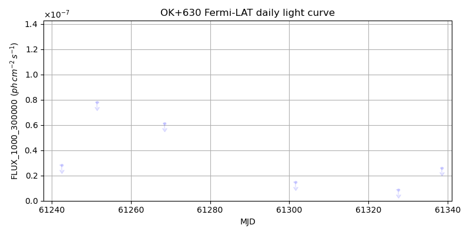
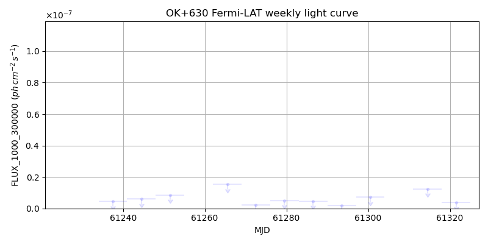

LAT Lightcurve site: https://fermi.gsfc.nasa.gov/ssc/data/access/lat/msl_lc/source/OK_p630
NED: Query
Time of last update of this page: UT: 2026-10-24 15:20 (MJD: 61337.640)
| Property | Value |
|---|---|
| R.A. | 9:21:36.24 |
| Dec. | 62:15:50.4 |
| z | 1.458 |
| 3FGL SpectrumType | |
| 3FGL PL Index | -1.00 |
| 3FGL Flux_100_300000 | -1.00e+00 |
| 3FGL Flux_1000_300000 | -1.00e+00 |
| 3FGL Flux >200 GeV | -1.00e+00 |
| 3FGL Extrap. Crab >200 GeV | -1.00 |
| 3FGL Flux After EBL Absorption >200GeV | -1.00e+00 |
| 3FGL EBL Crab Fraction >200GeV | -1.00 |

| MJD | dMJD | Flux | dFlux | Frac3FGL | FracCrab>200GeV | EBLFracCrab>200GeV |
|---|---|---|---|---|---|---|
| 61251.50 | 0.50 | 2.49e-07 | 0.00e+00 | 0.00 | 0.00 | -0.00 |
| 61254.50 | 0.50 | 2.35e-06 | 0.00e+00 | 0.00 | 0.00 | -0.00 |
| 61268.50 | 0.50 | 1.71e-07 | 0.00e+00 | 0.00 | 0.00 | -0.00 |
| 61301.50 | 0.50 | 1.20e-07 | 0.00e+00 | 0.00 | 0.00 | -0.00 |
| 61327.50 | 0.50 | 4.21e-08 | 0.00e+00 | 0.00 | 0.00 | -0.00 |

| MJD | dMJD | Flux | dFlux | Frac3FGL | FracCrab>200GeV | EBLFracCrab>200GeV |
|---|---|---|---|---|---|---|
| 61293.50 | 3.50 | 1.48e-08 | 0.00e+00 | 0.00 | 0.00 | -0.00 |
| 61300.50 | 3.50 | 3.17e-08 | 0.00e+00 | 0.00 | 0.00 | -0.00 |
| 61314.50 | 3.50 | 1.71e-07 | 0.00e+00 | 0.00 | 0.00 | -0.00 |
| 61321.50 | 3.50 | 4.91e-08 | 0.00e+00 | 0.00 | 0.00 | -0.00 |
| 61328.50 | 3.50 | 6.27e-08 | 0.00e+00 | 0.00 | 0.00 | -0.00 |

| MJD | dMJD | Flux | dFlux | Frac3FGL | FracCrab>200GeV | EBLFracCrab>200GeV |
|---|---|---|---|---|---|---|
| 61251.50 | 0.50 | 7.79e-08 | 0.00e+00 | 0.00 | 0.00 | -0.00 |
| 61254.50 | 0.50 | 1.49e-07 | 0.00e+00 | 0.00 | 0.00 | -0.00 |
| 61268.50 | 0.50 | 6.11e-08 | 0.00e+00 | 0.00 | 0.00 | -0.00 |
| 61301.50 | 0.50 | 1.46e-08 | 0.00e+00 | 0.00 | 0.00 | -0.00 |
| 61327.50 | 0.50 | 8.49e-09 | 0.00e+00 | 0.00 | 0.00 | -0.00 |

| MJD | dMJD | Flux | dFlux | Frac3FGL | FracCrab>200GeV | EBLFracCrab>200GeV |
|---|---|---|---|---|---|---|
| 61293.50 | 3.50 | 1.86e-09 | 0.00e+00 | 0.00 | 0.00 | -0.00 |
| 61300.50 | 3.50 | 7.07e-09 | 0.00e+00 | 0.00 | 0.00 | -0.00 |
| 61314.50 | 3.50 | 1.25e-08 | 0.00e+00 | 0.00 | 0.00 | -0.00 |
| 61321.50 | 3.50 | 3.95e-09 | 0.00e+00 | 0.00 | 0.00 | -0.00 |
| 61328.50 | 3.50 | 7.84e-09 | 0.00e+00 | 0.00 | 0.00 | -0.00 |
--------------------------------------------------------- Using user-supplied coords: 9:21:36.24 62:15:50.4 2000 --------------------------------------------------------- FLWO UT night of: 2026-10-25 Local Sid. @ Midnight: 01:50 Sunset (-15.0) (local, UT): 18:49 01:49 Sunrise (-15.0) (local, UT): 05:27 12:27 Moonrise (local, UT): Moonset (local, UT): Moon phase: 0.99 --------------------------------------------------------- AzTime LSID UT Obj_el Obj_az Mn_el Mn_az Sep. --------------------------------------------------------- 18:49 20:39 01:49 4.4 354.8 26.2 94.5 96.8 19:19 21:09 02:19 4.1 358.3 32.4 98.6 96.6 19:49 21:39 02:49 4.1 1.8 38.6 103.2 96.4 20:19 22:09 03:19 4.5 5.3 44.7 108.4 96.2 20:49 22:39 03:49 5.2 8.8 50.6 114.6 96.0 21:19 23:09 04:19 6.4 12.1 56.2 122.3 95.8 21:49 23:39 04:49 7.9 15.3 61.2 132.2 95.6 22:19 00:09 05:19 9.7 18.3 65.5 145.3 95.4 22:49 00:39 05:49 11.8 21.1 68.4 162.2 95.2 23:19 01:10 06:19 14.3 23.7 69.4 182.2 95.0 23:49 01:40 06:49 16.9 26.1 68.2 202.0 94.9 00:19 02:10 07:19 19.9 28.1 65.1 218.6 94.7 00:49 02:40 07:49 23.0 29.9 60.8 231.3 94.5 01:19 03:10 08:19 26.2 31.3 55.7 240.9 94.3 01:49 03:40 08:49 29.6 32.4 50.1 248.5 94.2 02:19 04:10 09:19 33.0 33.1 44.3 254.6 94.0 02:49 04:40 09:49 36.6 33.3 38.2 259.8 93.8 03:19 05:10 10:19 40.1 33.0 32.1 264.4 93.6 03:49 05:40 10:49 43.5 32.2 26.0 268.5 93.4 04:19 06:10 11:19 46.8 30.6 19.9 272.4 93.3 04:49 06:40 11:49 50.0 28.3 13.8 276.2 93.1 05:19 07:11 12:19 52.9 25.0 7.8 279.9 92.9 05:27 07:18 12:27 53.6 24.1 6.2 280.9 92.8 --------------------------------------------------------- Moon up all night, no dark time. Dark hours >55 deg.: 0.00